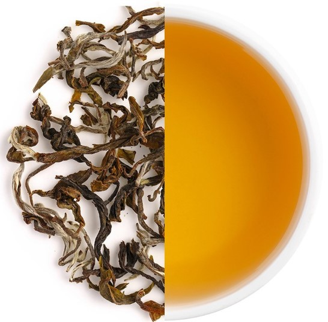
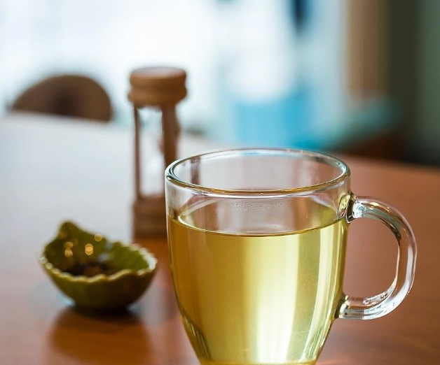
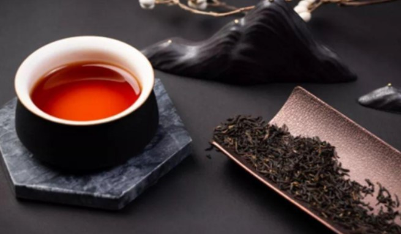
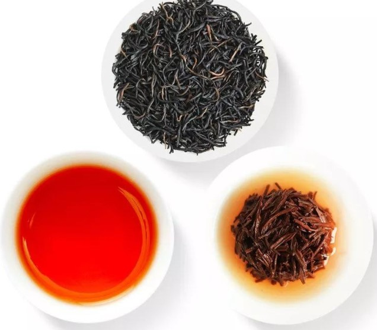
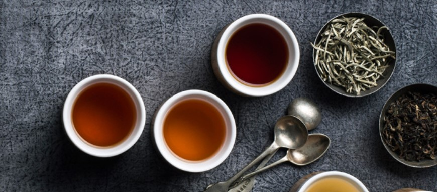
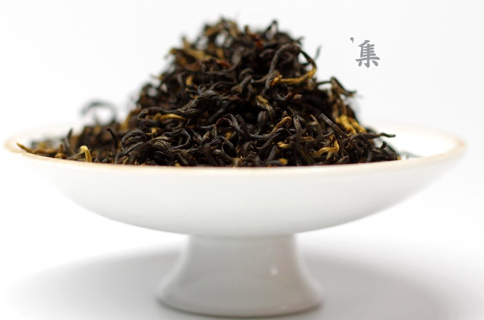
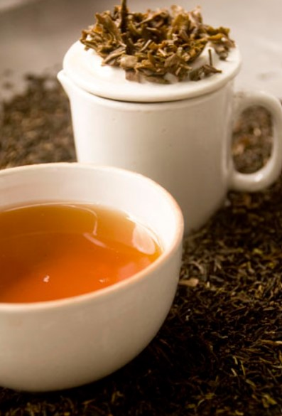

大吉岭红茶
大吉岭红茶，产于印度西孟加拉省北部喜马拉雅山麓的大吉岭高原一带。当地年均温15℃左右，白天日照充足，但日夜温差大，谷地里常年弥漫云雾，是孕育此茶独特芳香的一大因素。以5-6月的二号茶品质最优，被誉为“红茶中的香槟”。大吉岭红茶拥有高昂的身价。三、四月的一号茶多为青绿色，二号茶为金黄。其汤色橙黄，气味芬芳高雅，上品尤其带有葡萄香，口感细致柔和。大吉岭红茶最适合清饮，但因为茶叶较大，需稍久焖（约5分钟）使茶叶尽舒，才能得其味。下午茶及进食口味生的盛餐后，最宜饮此茶。
产地
大吉岭红茶是出产于印度孟加拉邦北部喜马拉雅山麓的大吉岭高原，海拔1800米以上的山区，这里被200平方公里的茶树林覆盖。大吉岭红茶是出产于印度孟加拉邦北部喜马拉雅山麓的大吉岭高原，海拔1800米以上的山区，这里被200平方公里的茶树林覆盖。
闻名世界
大吉岭红茶是小叶种茶树，生长在喜马拉雅山南端，印度西部地区大吉岭镇，与中国西藏开放口岸乃堆拉山口很近。这一地区是高原地带，海拔700米—2000多米，地势坡陡，气候凉爽，环境无污染，独特的生态环境孕育出大吉岭红茶与众不同的品质，茶叶都是人工采摘，送到工厂集中加工，这里的工厂许多是英殖民地时期留下来的，已有100多年的历史。
大吉岭红茶，世界三大高香红茶之一。产自印度北部喜马拉雅山麓，海拔1800米以上的山区，这里被200平方公里的茶树林覆盖，在晴朗的天气里可以遥望珠穆朗玛峰。凉爽的气候，薄雾笼罩的茶园，独特的地形，土壤和空气，使大吉岭茶具有清雅的麝香葡萄酒的风味和奇异的花果香。优质的大吉岭茶叶被称为茶中“香槟”。
大吉岭红茶外形条索紧细，白毫显露，香高味浓，鲜爽。发酵程度达80%左右，初摘茶叶颜色显绿色，次摘茶叶显棕褐色。香气属高香类，被称为麝香葡萄香味茶，香气比较持久，滋味甘甜柔和。汤色清澈明亮，汤色橙黄红艳，令人赏心悦目，被世人誉为“茶中的香槟”。
大吉岭红茶的产量较低，在印度茶叶总量中只占（96.2万吨）2%左右，依海拔高分布83个茶园。茶叶分四季采摘，3月—4月为初摘茶，5月—6月为次摘茶，7月—8月是雨季茶，9月—10月为秋季茶。初摘茶如同中国的明前茶，被视为珍品；次摘茶香气好滋味更显著，这两种茶都很受消费者青睐，在日本的茶叶展会上，展示着来自大吉岭83个茶园的样品，消费者会点着茶园的名字选购自己喜欢的茶叶。
在印度，茶叶生产和销售受到政府高度重视和控制，政府把印度三大类茶——大吉岭、阿萨姆、尼尔吉里红茶作为国家的茶叶商标在国际上注册，有独特的标志，在世界范围内流通。茶叶商标得到很好的保护。凡种植经营这三种茶叶的企业要向国家申请备案，获得资格许可证，只有这样才能上市、出口。
100多年来，大吉岭红茶被称颂为世界名茶之一，是英国贵族的宠儿。这种茶的前身就是中国福建武夷山的正山小种红茶。1857年英法联军入侵中国，一个英国搞植物学的军官发现了这种茶的价值，受英国政府的旨意，他利用一个叫福钧的苏格兰人帮助，收集茶叶苗、茶籽，并把技术工人带到印度，在大吉岭试种，几年后中国的红茶在这里安了家，从此以该地区的名字命名为大吉岭红茶。
特征
以5-6月的二号茶品质最优，被誉为“红茶中的香槟”。大吉岭红茶拥有高昂的身价。三、四月的一号茶多为青绿色，二号茶为金黄。其汤色橙黄，气味芬芳高雅，上品尤其带有葡萄香，口感细致柔和。大吉岭红茶最适合清饮，但因为茶叶较大，需稍久焖(约5分钟)使茶叶尽舒，才能得其味。下午茶及进食口味生的盛餐后，最宜饮此茶。
来自印度原产地的大吉岭红茶，是世界三大高香茶之一。她与印度阿萨姆红茶、中国祁门红茶有相同的美誉度。汤色红润明亮。优质的大吉岭红茶在白瓷杯或玻璃杯中显露着金色的黄晕，那就是上等好茶的标志。
选购法则
大吉岭茶的价钱需视茶园而定，一般海拔越高的身价越高。还有些评价不错的茶园一般行情亦不差。同一茶园可生产出不同等级茶叶，而且每家茶商对茶叶的等级标准不一，故同一茶园有时可在不同茶商的售价上呈相当大的差距，而市面上众多品牌的大吉岭茶该如何选择？在购买如大吉岭茶这类高单价的茶种时，最好选择有服务人员的商店，如此可多了解茶叶是属于夏收茶或春收茶还是混合茶，因为不是每个品牌都表示的很清楚。所以如有服务人员在旁可多得到些资讯，清楚得知所欲购茶叶的特征。台湾因天气潮湿故茶叶保存不易，故在购买此类高级茶叶前需确认茶叶的品质。
一般于茶店选购大吉岭茶叶不外乎，灌装茶叶与散装茶叶。灌装茶叶标示一般而言均十分清楚。一般市面上出现的大吉岭茶灌装茶都以混合茶出现居多，如为单一茶园则除了茶商名称，保存期限及重量均有说明。
散装茶叶则需视茶店的商业道德了，当然茶园名称与等级是绝对需要，最重要的是店家需详细告知茶叶来源及进口日期，以便消费者判断是否值得购买。
饮用方式
种类简介
大吉岭茶种类众多，每个茶园和不同的采收期所冲泡出来的茶汤相差甚多，而且浸泡时间长短不同也带来不同风味。大吉岭茶叶一般甚少拿来当薰香茶，除了少数典雅风味如：茉莉大吉岭茶、伯爵大吉岭茶、香草大吉岭茶之外。印度除了茶叶之外，盛产香料，有款著名的印度辛香茶，即是以大吉岭茶为底再薰上多种辛香料如豆寇、丁香、胡椒、肉桂和姜。
冲泡方法
首先置大吉岭红茶4克，注水350－400ml，焖泡3－4分钟。其次将茶水用300－500ml的玻璃壶或瓷壶盛装，这样做主要表现为两方面，一是大壶对香气和综合口感的反映更为全面，二是大壶比工夫泡法更容易控制。
品种
大吉岭的红茶的品种是来自中国的茶树品种，当初在印度其他地区试种中国茶全部以失败告终时，只有种植在大吉岭的中国红茶幸存下来，并因其独特的地理位置和气候的关系，形成了独具一格的口味。大吉岭的最佳采摘季严格地分为春、夏、秋三季，各个时期所采摘的红茶的味道和香气也大为不同。
春茶，在3-4月采摘，也被称为“First Flush”，即春摘，是一年当中最早的一次采摘，初茶嫩芽居多，比起其他时节的大吉领红茶来，经过春日温柔蕴藉的云雾洗礼，滋味往往分外轻扬甜润，洋溢著清新的花香，汤色呈金黄色，绝对是不可多得的难忘体验！
夏摘茶，在5-6月采摘，被称为“Second Flush”，即次摘，一年当中的第二次采摘，亚洲季风吹拂下，香气与滋味既织细精雅、却也同时丰硕饱满有个性，增加了圆熟醇香之感；汤色呈橘黄色，明亮。故而在各季节大吉领红茶中，向来评价最高、也最受茶饕们的肯定与喜爱。
秋摘茶，在7-8月采摘，这个时期采摘的红茶被称为“Autumnal”，而除了素负盛名的夏摘与春摘茶之外，秋摘的大吉领茶也极富特色。 需得等到当地雨季过后的九到十月间才能采收制茶的大吉领，茶色较深、滋味札实浓厚，价格也相对较平易；故而不仅可以轻松领略大吉领的另种风情，也是三种季节里最适合用来冲制奶茶的茶款。
大吉岭有87个茶叶庄园，茶叶庄园漫布青藏高原南部山麓的不同海拔高度的溪谷里。正是由于大吉岭茶园之间的海拔高度的差异，不同庄园茶叶的品质区别很大。知名的茶叶庄园有：Castleton（卡斯尔顿），Jungpana（蔷帕拉），Gopaldhara（高帕德哈拉），Goomtee（洭缇），Risheethat（里斯希赫特），Rohini（罗西尼），Thurbo（瑟波），Okayti（欧凯蒂），Phuguri（芙古丽），Margaret's Hope（玛格丽特的希望），Sungma（桑格玛），Gielle（吉尔），Selibong（瑟利朋），Kalejvallery（卡乐奇山谷），Giddapahar（吉达帕赫），Seeyork（希约克），Monteviot（蒙特沃特），Phoobseling（芙布瑟灵），Chamong（查蒙），Linga（灵芽），Upper Fagu（阿泊尔法古），Glenburn（格里恩伯恩），Highland Star（高原星）。